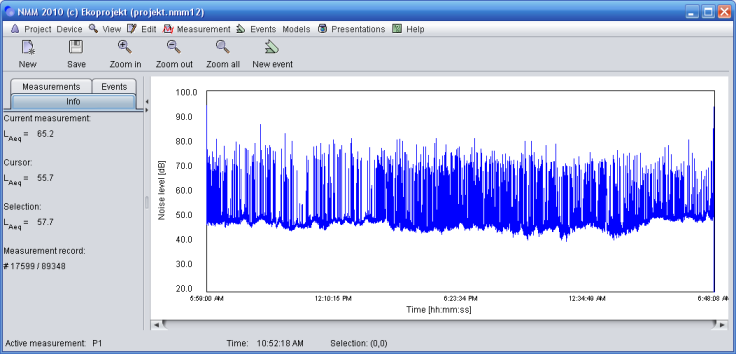

Road noise sampling.
Introduction
This calculation model is based on Polish reference method described in
Rozporządzenie Ministra Środowiska z dnia 16 czerwca 2011 r. w sprawie wymagań w
zakresie prowadzenia pomiarów poziomów substancji lub energii w środowisku przez
zarządzającego drogą, linią kolejową, linią tramwajową, lotniskiem lub portem
(Dz. U. z dnia 7 lipca 2011 r.)
Obviously this method can be applied in any country, except situations where
application of local measurement method is obligatory.
Road noise sampling is based on assumption that whole day and night may be divided into
shorter periods (in this case 24 1-hour long periods) and it is possible to
assign those periods into groups where noise level doesn't differ more then 3dB
Usually it is possible to create 4-7 such a groups. Field noise measurement is then
required only in representative hours and Leq is calculated based on those samples.
This method has advantage: it is not required to measure traffic noise
during 24-hour period, but it also has disadvantages: it is not so accurate as
24-hour long measurement, and before it can be applied there must be a way to
identify equally "noisy" periods. And this means we need at least information on treffic volume.
Example
The first picture shows 24 hour road noise measurement. It starts at 6 AM and lasts until 6 AM next day.
The measurement is long enough to tell noise level for day and night without any further processing,
however for our own purpose let's try to calculate noise level according to road noise sampling method.

All created models are added to NMM project and saved on disc together with whole data. You can come
back to the model using "Model manager" ([MODELS] -> [MODELS MANAGER])
Last updated: 03.12.2012, Jarosław Kowalczyk